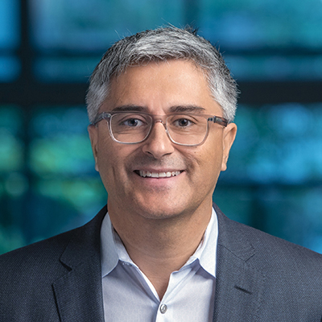

Principal Investigator

René Vidal
Rachleff & PIK University Professor of ESE, Radiology, CIS, Statistics and Data Science
School of Engineering & Applied Science, Perelman School of Medicine, Wharton School
Director of the Center for Innovation in Data Engineering and Science (IDEAS)
Co-Chair of PennAI
University of Pennsylvania
René Vidal is the Rachleff and Penn Integrates Knowledge (PIK) University Professor of Electrical and Systems Engineering, Radiology, Computer and Information Science, and Statistics and Data Science at the University of Pennsylvania, with appointments in the School of Engineering & Applied Science, Perelman School of Medicine, and Wharton School. He is the Director of the Center for Innovation in Data Engineering and Science (IDEAS) and Co-Chair of PennAI. His current research focuses on the foundations of deep learning and trustworthy AI and its applications in computer vision and biomedical data science.
Staff


Current PhD Students


Former Research Scientists
- Benjamin Haeffele (2015-2025)
- Paris Giampouras (2022-2023) — now Assistant Professor at University of Warwick
- Stewart Slocum (2021-2022) — now PhD Student at MIT
- Mahyar Fazlyab (2020-2021) — now Assistant Professor at Johns Hopkins University
- Benjamín Béjar Haro (2017-2019) — now Lead Data Scientist, Swiss Data Science Center
- Haider Ali (2016-2018)
- Bijan Afsari (2014-2016)
Former Post-doctoral Researchers
- Hancheng Min (2023-2025) — now Assistant Professor at Shanghai Jiao Tong University
- Paris Giampouras (2022-2023) — now Assistant Professor at University of Warwick
- Mustafa Kaba (2017-2020) — now Applied Scientist at AWS (formerly eBay)
- Guilherme França (2017-2020)
- Zhihui Zhu (2018-2019) — now Assistant Professor at Ohio State University
- Manolis Tsakiris (2016-2017) — then Assistant Professor at ShanghaiTech, now Chinese Academy of Sciences
- Shahin Sefati (2014-2016) — then Senior Researcher at Comcast, now at Meta
- Bijan Afsari (2010-2014)
- Erdem Yörük (2011-2013) — now at Vispera Information Technologies, Turkey
- Luca Zappella (2011-2013) — then Engineer at Metaio GmbH (Munich), now Engineer Project Manager at Apple, USA
- Aastha Jain (2011-2012) — now at LinkedIn, USA
- Avinash Ravichandran (2010-2012) — now Research Scientist at Amazon
- Diego Rother (2009-2011) — now Engineer at Google, USA
- Mihaly Petreczky (2006-2007) — now Assistant Professor at Ecole des Mines, Douai, France
Former PhD Students
- Aditya Cattopadhyay (2018-2024) — PhD CS, JHU — now Applied Scientist at Amazon
- Ambar Pal (2018-2024) — PhD CS, JHU — now Applied Scientist at Amazon
- Carolina Pacheco (2018-2024) — PhD BME, JHU
- Hancheng Min (2019-2023) — PhD ECE, JHU — primary advisor Enrique Mallada
- Tianyu Ding (2017-2021) — PhD AMS, JHU — primary advisor Daniel Robinson
- Effrosyni Mavroudi (2015-2022) — PhD BME, JHU — now at Facebook
- Florence Yellin (2015-2020) — PhD ME, JHU
- Chong You (2012-2018) — PhD ECE, JHU — postdoc UC Berkeley, now at Google Research
- Siddharth Mahendran (2010-2018) — PhD ECE, JHU — now Senior Applied Scientist at Amazon AGI
- Evan Schwab (2011-2018) — PhD ECE, JHU — co-advised with Nicolas Charon
- Giann Gorospe (2009-2017) — PhD BME, JHU
- Manolis Tsakiris (2013-2017) — PhD ECE, JHU — now Assistant Professor at ShanghaiTech
- Colin Lea (2013-2017) — PhD CS, JHU — co-advised with Greg Hager — then at Occulus, now at Apple
- Lingling Tao (2010-2017) — PhD ECE, JHU — then at Occulus, now at Facebook Reality Labs
- Ben Haeffele (2013-2015) — PhD BME, JHU — co-advised with Eric Young — research scientist at JHU/Penn
- Roberto Tron (2007-2012) — PhD ECE, JHU — postdoc Penn, now Assistant Professor at Boston University
- Rizwan Chaudhry (2006-2012) — PhD CS, JHU — then Microsoft, Nest, Google-Health
- Ehsan Elhamifar (2006-2012) — PhD ECE, JHU — postdoc UC Berkeley, now Assistant Professor at Northeastern University
- Ertan Cetingul (2005-2011) — PhD BME, JHU — then research scientist at Siemens, now research director at General Electric
- Avinash Ravichandran (2004-2010) — PhD ECE, JHU — postdoc UCLA, then research scientist at Amazon
- Dheeraj Singaraju (2004-2010) — PhD ECE, JHU — postdoc UC Berkeley, then Google, now at Waymo
- Alvina Goh (2004-2010) — PhD BME, JHU — adjunct assistant professor at NUS, now Director of AI Platforms at DSAID, GovTech Singapore
Former Masters Students
- Abhishek Goyal (2024) — MSc CIS, Penn
- Yutao Tang (2020-2023) — MSc BME, JHU
- Prashast Bindal (2020-2021) — MSc CS
- Connor Lane (2016-2019) — MSc CS
- Carolina Pacheco (2016-2018) — MSc BME, JHU
- Benjamín Béjar (2011-2012) — MSc BME, JHU — postdoctoral fellow at EPFL, then Associate Research Scientist at JHU
- Jixin Li (2009-2010) — MSc ECE, JHU — now Lead Research Analyst at Videology
- Gagan Bansal (2007-2008) — MSc CS, JHU — then Research Engineering at Yahoo!, then Senior Research Software Development Engineer, now Senior RSDE at Azure Machine Learning, Microsoft
- Atiyeh Ghoreyshi (2005-2006) — MSc BME, JHU — PhD at McGill, postdoc USC, engineer at Masimo, now senior R&D scientist at Auris Surgical Robotics
Visiting Graduate Students
- Laura Daza (2022)
- Julio Hurtado (2020)
- Salma Tarmoun (2019) — now PhD student at Johns Hopkins University
- Imke Meyer (2018) — École Polytechnique — then PhD student at École Polytechnique, then INRIA, now at Institute of Public Health in Berlin
- Claire Donnat (2015) — École Polytechnique — then PhD at Stanford, now Assistant Professor at University of Chicago
- Islem Rekik (2014)
- Bertrand Rondepierre (2013) — École Normale Supérieure
- Laurent Bako (2007) — now Associate Professor at École Centrale de Lyon
- Roberto Tron (2006) — Visiting student — then PhD at JHU, postdoc at Penn, now Assistant Professor at Boston University
Former Undergraduate, Intern, REU and Visiting Students
- Shreya Wadhwa (2022) — CS, JHU
- Stewart Slocum (2021) — CS, JHU
- Derek Lim (2020) — REU
- Alejandro Barrera (2019) — REU
- Evan Frenklak (2018) — REU
- Max Lu (2018) — REU
- Ksenia Lekomtceva (2018) — REU
- Larissa Clopton (2017) — REU
- Divya Bhaskara (2016) — REU
- Alexander Serrano (2015) — REU
- Quin Liu (2013) — REU
- Soren Wolfers (2013) — DAAD visiting student
- Nicolas Jimenez (2012-2013) — Research assistant
- Arunesh Mittal (2012-2013) — Neuroscience, JHU
- Patrick McClure (2012) — REU student
- James Breen (2011) — REU student
- Simon Schütz (2010) — DAAD visiting student
- Martin Wojkowsky (2010) — DAAD visiting student
- Aline Elad (2010) — REU student
- Alex Hsieh (2010) — BME, JHU
- Lucas Theis (2009) — DAAD visiting student
- Andreas Beckers (2009) — DAAD visiting student
- Leyla Isik (2009-2010) — REU, BME, JHU — then PhD at MIT, now Assistant Professor at JHU
- Solomon Liu (2008-2011) — BME, JHU
- Venkatesh Srinivas (2008) — ME, JHU
- James Choi (2008) — ME, JHU
- Charlie Ouyang (2008) — B.S. BME, JHU
- Vincent Yeh (2007) — B.S. BME, JHU
- Jai Madhok (2007) — B.S. BME, JHU
- Matthias Behnisch (2006) — Visiting student — now at Bielefeld University, Germany
- Andy Wong (2006) — B.S. BME, JHU
- Mary Ellen Pozo (2005) — B.S. BME, JHU
- Sampreet Niyogi (2004-2005) — B.S. BME, JHU — then PhD at University of Pennsylvania
High School Students
- Iraj Shroff (2025)
- Prisha Shroff (2024)
- Sruti Nuthalapati (2010)
- Maddie Crowl (2009) — Women in Science and Engineering (WISE) program
- Andy Tien (2006) — then at JHU as undergraduate student